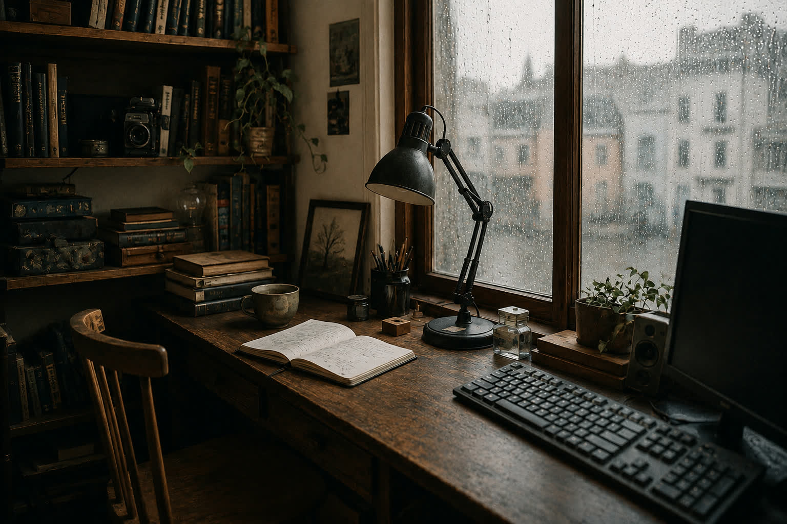

Værten · about, philosophy & contact
The keeper
of this place.


Hello. My name is Kasper Krog.
I build communities, digital spaces and small cultural projects centered on atmosphere, meaning and human connection. A lot of what I make sits somewhere between technology and atmosphere.
I live in Aarhus, Denmark, where I work within public transportation. Outside work I make community projects around games, culture, music, volunteering and storytelling.
My paid work gives me a steady life with enough quiet around it. I am grateful for that. It lets me spend my free time helping other people make kind things happen.
I keep returning to how a digital system can feel more human, and what makes a community warmer and more intentional. Rituals and stories change an ordinary day; I want to understand how.
The projects answer in different ways: games treated as art, volunteers trusted, matcha made slowly, folk culture, music and conversation. They are places to gather around a shared experience.
I am drawn to Disco Elysium, Malazan, cozy horror, Nordic atmospheres, fantasy worlds, rainy cities and trip hop. They hold melancholy and warmth in the same room.
This site keeps track of what I care about: the worlds I build, the communities I try to nurture, and the small acts that hold them together.
What holds it together.
I don't think meaning is invented out of nothing. It emerges through relationships, perspectives and existence itself. People, places, stories, communities, rituals and memories belong to systems of connection. Things matter because they take part in a life.
I return to process philosophy, Daoism and existential reflection: ways of thinking that make room for uncertainty and becoming. Reality as something alive and still underway.
Light becomes brighter in darkness.
Warmth matters because cold exists.
Stillness can exist beside chaos. I am interested in the friction between technology and humanity, and in the place ritual still holds within modern life. Contrast gives experience its shape.
A lot of modern systems forget there's a person at the end of them. Software asks for attention when it could simply help. Communities become numbers when they should remain names and faces. I try to make tools that leave room for the person using them.
I care about the emotional texture of places, conversations, music, games and rituals. What a thing does matters. So does how it feels to inhabit.
Meaningful things are often built through small acts of care: organizing an event, making tea, sharing a story, helping with the cleanup, helping someone feel seen.
The stories that stay with me let people keep caring through grief and uncertainty, sometimes at cosmic scale. In those stories, darkness makes tenderness easier to see.
At the center of most of my projects is the same impulse: to make small refuges for culture, reflection, creativity and human connection.
And the way all of it starts: do what you want to do, and see who sticks around to put wind in your sails.
The light is on.
No forms, no funnels, no newsletter. If you write, I read it.
If you are trying to arrange a cultural evening, care for volunteers, make a small website easier to use, or give a project a clearer home online, you can write to me.
I usually help for free when I have the time and the project is kind to the people around it. Sometimes that means advice over tea; sometimes it means planning, writing, building, or carrying chairs.
- post kkandersen01@gmail.com. Danish or English; tell me what you are trying to make.
- rooms Aarhus Gamestormers. The community door; the others open from there.
if you're ever in Aarhus, the kettle rule applies to you too.